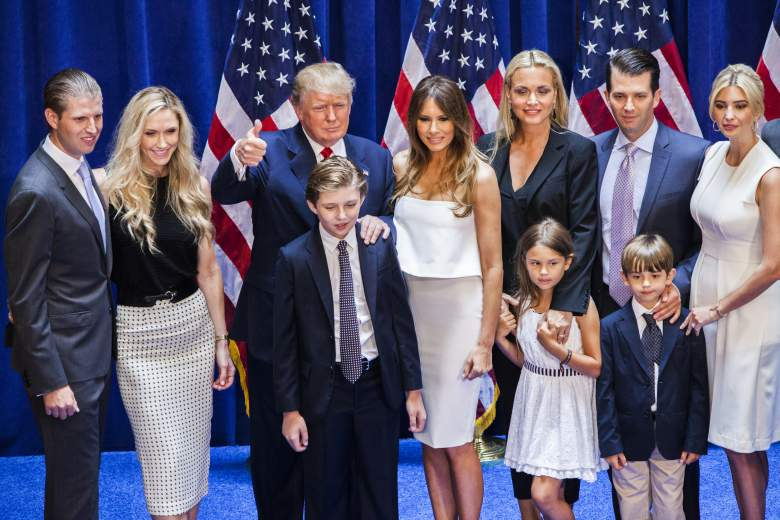

Donald Trump is de vierde van vijf kinderen. Zijn zus, Elizabeth, is een voormalig bankier Chase; zijn andere zus, Maryanne, is een gepensioneerde rechter die over de Verenigde Staten Hof van Beroep voor de Derde Circuit gediend; en zijn broer, Robert, diende als een top Trump executive. Maar de broer of zus die misschien heeft vergaard de meeste media-aandacht is Freddy, die van alcoholisme stierf in 1981 op de leeftijd van 43 - wie Trump verwijst vaak bij de bespreking van zijn beslissing van alcohol zijn hele leven te onthouden. Een New York Times verhaal geplaatst januari schetst een gecompliceerde relatie tussen Donald en Freddy dat zelfs uitgebreid tot zijn relatie met de familie van zijn oudere broer. The Times meldde dat Donald geholpen ontwerp zal van zijn vader, die kinderen Freddy's gesneden uit de nalatenschap wanneer Fred Sr. stierf in 1999. "kinderen Freddy's aangeklaagd, beweren dat een eerdere versie van de wil hen om het aandeel van de nalatenschap van hun vader had getiteld , maar dat Donald en zijn broers en zussen ongepaste beïnvloeding over hun grootvader, die dementie hadden, om hen uitgesneden had gebruikt, "de Times gemeld. "Een week later, de heer Trump wraak door terugtrekken van de medische voordelen van cruciaal belang voor zijn neef baby kind." Donald Trump jr, 39, is het oudste kind van Donald Trump met Ivana Trump. Hij dient als executive vice-president van de Trump Organization. Donald Jr. is getrouwd met Vanessa Haydon en ze hebben vijf kinderen. Donald Jr. uitgebrachte stemmen New York voor zijn vader tijdens het appèl aan de Republikeinse Nationale Conventie, op 19 juli, het geven van zijn vader het aantal afgevaardigden nodig is om officieel te beveiligen de GOP nominatie voor het presidentschap. Later, Donald Jr. zei in een toespraak: "Het was een van de grote eer van mijn leven aan hem over de top in de afgevaardigde tellen eerder vanavond te zetten." de oudste zoon van Trump's bevond zich in een beetje warm water in september, toen hij Syrische vluchtelingen naar Skittles vergeleken in een meme geplaatst op Twitter. "Als ik had een bowl kegelen en ik vertelde je gewoon drie zou je vermoorden. Wil je een handvol nemen? Dat is onze Syrische vluchtelingen probleem," zei de meme.
